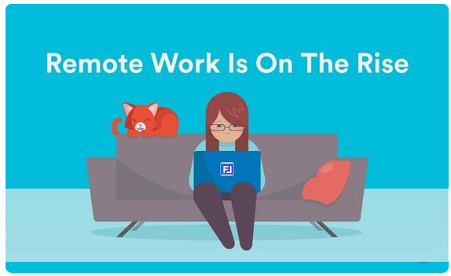

With the ever-increasing digitalization of the world’s economy, a radical transformation is taking place in the global workforce. New jobs are appearing requiring businesses to collaborate with creative talent from different places inside the same company or across companies around the world. They can network and work together on unique projects from any location by sharing the same workspace application, like FrameLink.

Framelink allows businesses to build and maintain a system that’s unique
for them that’s always ready to adapt to changes.
Companies and contractors need a secure but easy way to share their information system
to other networks of collaborators. Use Framelink Permissions to share your business
information to outsiders.
Free-lancers and company team members need to share project workspaces they’re collaborating on.
As they get included into different workspaces, they will be able to switch between any workspace with a single click.
Framelink’s workspace is based on the common needs of any company:
data, action, and good communication between multiple team members and workspaces.
Check a video example of an organization using FrameLink:notice that this is a 100% customizable application easily adjustable to your organization without hired help.
FrameLink Philosophy
Have you ever been stumped by a company because you required changes that their system
wasn’t able to make? Framelink’s first principle is to always be adaptable to change.
We assume that your information system may change at any time. Your team may change,
the structure of your data may change, you communications to the outside world may change.
When changes happen you want your information system to easily reflect those changes
while keeping all of your information safe and ready to operate on any device.
Data Organization
FrameLink data is organized in Tables. Tables contain records that hold their
information in Fields. When you first access a FrameLink table, you see a List
with rows as records and columns as fields. In List Mode you can easily search any record simply using a text or partial text to be found in any field. Once you find it, you may zoom into that record by clicking the left most Zoom Lens
that appears when you hover any record. In Zoom Mode you see all the fields of a single record and all of its relations to other FrameLink Tables.
Inside a FrameLink application, you may navigate from relation to relation without searching long lists to find the information you need. You may jump directly to the information you need because related information is always close by.
In most real case situations you will need to see data from several perspectives. With FrameLink you can define any number of predefined filters that present the information in the most convenient way for the end user. A simple click allows the change from one filter to another. Filters can be selected from a menu which is written in the business language of the organization - common to all users.
Operations Principles
If you have "DESIGNER" permissions, you will have the ability to adapt FrameLink to the changes your business requires. In List Mode you will be able to completely transform any table by changing its name, adding or removing columns, changing the order or size of any column or completely transforming its interface. This interface transformation includes the creation of any number of related tables.
With FrameLink you do not need any structure upfront to receive your data. You can (and we recommend it...) define your structure while playing with real data.
You can create new tables while introducing data content in them without leaving the current List Mode.
At any time, you will see the icons you need, above the line of headers. Users with "DESIGNER" permissions, will be able to change the header as well as what kind of interface the column is. To do this they need to click over the column header they want to change and icons to update the interface will appear above the headings line. To return to regular user view, click anywhere outside the column headers. "DESIGNERS" will see an "Add field" icon available.
To make a change to a specific column (such as changing its name, its interface or removing the column), click that specific Column Header and FrameLink will show all the icons you may use to transform that column.
To update any column header simply write the new name in the place of the old one.
If the operation does not refer to an existing column (such as changing the table name or adding a new column to the table), click outside the Column Headers and the icons you might want to use will show up.
Navigation in FrameLink
In real life we have different strategies to search for the information we need. Searching by keyword is one way to do it, but very often you would like related information to appear immediately - one click away - without any search. That's exactly what FrameLink does. From any point in the application, you can take several alternative paths to go directly to the information you need without having to search or opening another list.
In both List Mode or Single Record Mode you will find fields that
have a Zoom Lens
at the right side of the field content. These are Linked Fields that you can click (rightward Lens) to jump directly to Zoom Mode. All records in Zoom Mode have a set of tabs (below the last field) that show you all connections from the current record to other Framelink Records.
Once you select the tab of the relation you want to follow, you may jump from Zoom Lens to Zoom Lens and from Tab to Tab, again and again following whichever path is more convenient for you.
This navigation process is available all over the application.
FrameLink Services
In previous points our focus was about organizing and locating data, but in most organizations data needs to be actionable. FrameLink Services is your way to perform those actions.
Typically actions over data are processes that most softwares perform by following rules that are defined by a code written in a computer language. Being a zero code platform, FrameLink does this in an user friendly way.
FrameLink services show up depending on the type of data that you have directly or undirectly available in List Mode.
Examples:
If the current table has records (at least one record) an export to Excel® option will be available.
If an Email interface exists in the current table or any table directly related to the current one, an Email Service option will be available.
If a Phone interface exists in the current table or any table directly related to the current one, an SMS Service option will be available.
If the current table has a master relation to any other table, a Report Service will be available.